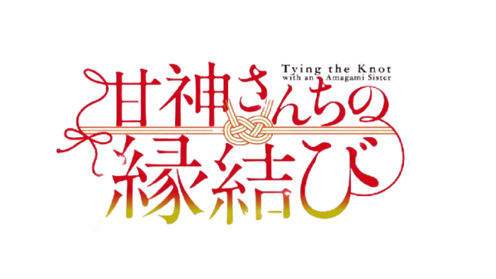

💍 Tying the Knot with an Amagami Sister

📖 Basic Info
- Genre: Romance, Comedy, Harem
- Based on: Manga by Marcey Naito
- Status: Anime Adaptation Announced
🧠 Story (Simple Explanation)
The story follows Uryu Kamihate, a hardworking student aiming to enter a prestigious university.
He is taken in by a shrine and ends up living with three beautiful shrine maiden sisters.
The condition? He must eventually marry one of them to inherit the shrine.
As they live together, bonds grow, feelings develop, and his future becomes more complicated.
💖 A romantic story full of comedy, tradition, and unexpected love.
👥 Main Characters

|
|

|

|

|

|
|---|